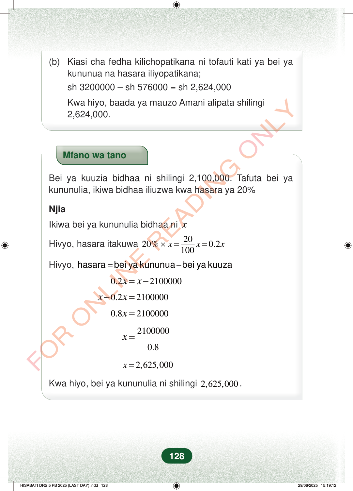

(b)Kiasi cha fedha kilichopatikana ni tofauti kati ya bei yakununua na hasara iliyopatikana;sh 3200000 – sh 576000 = sh 2,624,000Kwa hiyo, baada ya mauzo Amani alipata shilingi2,624,000.Mfano wa tanoBei ya kuuzia bidhaa ni shilingi 2,100,000. Tafuta bei yakununulia, ikiwa bidhaa iliuzwa kwa hasara ya 20%NjiaIkiwa bei ya kununulia bidhaa nixHivyo, hasara itakuwa2020%0.2100xxx×==Hivyo,=−hasara bei ya kununuabei ya kuuza0.22100000xx=−0.22100000xx−=0.82100000x=21000000.8x=2,625,000x=Kwa hiyo, bei ya kununulia ni shilingi2,625,000.128
(b) Kiasi cha fedha kilichopatikana ni tofauti kati ya bei ya
kununua na hasara iliyopatikana; sh 3200000 – sh 576000 = sh 2,624,000
Kwa hiyo, baada ya mauzo Amani alipata shilingi 2,624,000.
Mfano wa tano
Bei ya kuuzia bidhaa ni shilingi 2,100,000. Tafuta bei ya kununulia, ikiwa bidhaa iliuzwa kwa hasara ya 20%
Njia
Ikiwa bei ya kununulia bidhaa ni x
Hivyo, hasara itakuwa 20 20% 0.2 100 x x x × = =
Hivyo, = − hasara bei ya kununua bei ya kuuza
0.2 2100000 x x = −
0.2 2100000 x x − =
0.8 2100000 x =
2100000
0.8 x =
2,625,000 x =
Kwa hiyo, bei ya kununulia ni shilingi 2,625,000 .
128
(b) Kiasi cha fedha kilichopatikana ni tofauti kati ya bei ya kununua na hasara iliyopatikana;<math><mrow><mtext>sh </mtext><mn>3200000</mn><mo>−</mo><mtext> sh </mtext><mn>576000</mn><mo>=</mo><mtext> sh </mtext><mn>2,624,000</mn></mrow></math>Kwa hiyo, baada ya mauzo Amani alipata shilingi 2,624,000.Mfano wa tanoBei ya kuuzia bidhaa ni shilingi 2,100,000.Tafuta bei ya kununulia, ikiwa bidhaa iliuzwa kwa hasara ya 20%NjiaIkiwa bei ya kununulia bidhaa ni xHivyo, hasara itakuwa<math><mrow><mn>20</mn><mi>%</mi><mo>×</mo><mi>x</mi><mo>=</mo><mfrac><mn>20</mn><mn>100</mn></mfrac><mi>x</mi><mo>=</mo><mn>0.2</mn><mi>x</mi></mrow></math>Hivyo, hasara = bei ya kununua – bei ya kuuza0.2x = x - 2100000x - 0.2x = 21000000.8x = 2100000<math><mrow><mi>x</mi><mo>=</mo><mfrac><mn>2100000</mn><mn>0.8</mn></mfrac></mrow></math>x = 2,625,000Kwa hiyo, bei ya kununulia ni shilingi 2,625,000 .